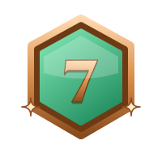
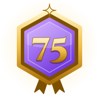
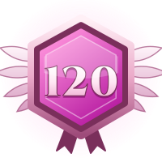
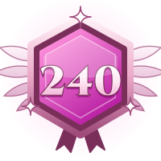
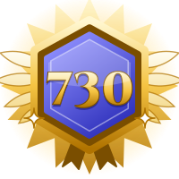

Motif for Windows 11
One active task.
Zero clutter.
A lightweight Windows app that keeps your current task pinned to a click-through notch at the top of your screen. Capture tasks from any app with one shortcut, timebox your work, and track your focus locally.
$4.99 one-time purchase. No subscription, no account, no notifications.
- 1Press Ctrl Shift Space from any app
- 2Type your task (add ~15m to set a timebox)
- 3↵ adds it to today's list
- 4Esc returns to your work
The Notch
Visible at a glance.
Click-through by default.
A compact bar sits flush against the top edge of your monitor, displaying your active task and elapsed time. It never steals keyboard focus, never pops up unexpectedly, and passes mouse clicks directly to the window underneath.
Active session
Displays the task title, elapsed time, and a progress bar tied to your timebox.
Hover controls
Hover to expand controls for pausing, completing, or hiding the notch. If the task has subtasks, the next step appears beneath the title.
Auto-pause
Locking your PC, entering sleep mode, or stepping away for 5 minutes pauses the timer automatically.
Timebox overrun
If you pass your set timebox (e.g., 45 minutes), the timer turns amber. No alarms or popups.
Idle state
When no task is active, the notch displays your next scheduled item for today.
End-of-day summary
After 18:00, if you logged focus time, the notch switches to "Day done" with your daily total. Click it to open today's summary in the Task hub. It never opens a window on its own.
Command Bar
Capture and start tasks
from any window.
Press Ctrl Shift Space to open the Command bar instantly from any app. Today's tasks are already sorted by time. Type to add a new task, or press Enter on an existing row to start.
- Inline timeboxing. Add ~45m to any task to give it a 45-minute timebox.
- Plain-text repeats. Add "every mon wed fri", "weekdays", or "every 3 days" to set a recurring schedule.
- Quick Inbox capture. Press Tab instead of Enter to send unscheduled tasks straight to your Inbox.
- No missed keystrokes. Start typing the moment you press the shortcut; Motif catches every key, even before the bar finishes opening.
Strict Single-Tasking
One task at a time.
No parallel timers.
Starting a new task while another is active prompts you to wrap up the current one first, so nothing gets left half-finished.
- Three clear states. Mark it Done, send it back to your list for later, or drop it if it's no longer needed.
- Honest history. Dropped tasks stay on your calendar with a strikethrough instead of vanishing, giving you an accurate record of your day.
- One-key switch. Press D, L, or X to choose, or Esc to keep working on your current task.
Task Hub
Inbox, calendar, and session history in one view.
Keep unscheduled tasks in the Inbox and drag them onto a Day, Week, or Month calendar (snapping to 15-minute increments). Completed focus sessions stay logged on the timeline.
- Write the quarterly reportIn focus
- Prepare the slides45 min timebox
- Call the bank
- GymRepeats Mon, Wed, Fri
Month overview
See daily focus totals alongside color-coded chips for completed, dropped, planned, active, and recurring tasks, plus synced calendar events.
Task details panel
Click any task to edit its schedule, timebox, subtasks, notes (with clickable links), and past focus sessions.
Clean recurring tasks
Set repeats for daily, weekdays, specific days, monthly, or every N days. Only the current task sits on your list; the next one appears after you finish or skip it.
Persistent overdue items
Unfinished tasks from past days stay pinned under Overdue in your Inbox and Command bar until you complete, reschedule, or drop them.
- Send invoice to clientYesterday · ~15m
- Call the dentistMon 16
Searchable Timeline
Press L in the Task hub to view a filterable list of all open tasks grouped by date or status, with inline quick actions.
- Prepare the workshop slidesNext: Draft the slides
- GymMon, Wed, Fri
Focus Score
Automatic 1 to 5 scoring.
Four transparent rules.
Every session of 5 minutes or more gets scored automatically when it ends. No forms to fill out, no AI. Just four clear rules:
Focus Map
Identify your most
productive hours.
An 8-week heatmap plotting your average focus scores by weekday and hour. After 14 days of logged sessions, Motif highlights your highest-scoring two-hour window so you can schedule demanding work accordingly.
- Covers 07:00 to 22:00, Monday through Sunday.
- Each cell shows the average score of sessions started in that hour.
- If there isn't enough data yet, it tells you exactly how many days remain.
Breaks
Structured breaks
you control.
When a session finishes (50 minutes by default), a break window prompts you to rest your eyes and breathe. Motif never auto-starts the next session. You decide when to begin.
- Flexible intervals: configure sessions from 15 to 120 minutes, and breaks from 3 to 30 minutes.
- Keyboard controls: press Enter to start the next session, or + to extend your break by 5 minutes.
- Optional mood log: record a one-key mood check-in for your own reference; it never affects your focus score.
Consistency
Streaks built for
real schedules.
Complete one focus session a day to keep your streak going, with no reminder nags or penalties for taking days off.











Unlock 20 interactive 3D medals spanning from your first session up to 1,000 days.
Optional Sync
Google Calendar and Drive,
on your terms.
Both are off by default and connect directly to Google. Motif has no servers of its own.
- Read-only Google Calendar. View your meetings in green alongside your tasks so you can plan around them. Motif cannot edit your calendar. Convert any event into a task with one click.
- Google Drive sync. Sync your local database across devices using a hidden app folder in your own Google Drive. Motif never stores a copy of your data.
- Multi-PC support. Share one task list across multiple computers while running an independent active task on each PC.
Privacy
Stored on your PC.
Here is what goes online.
Your tasks, sessions, notes, and streaks are stored locally on your PC. Data leaves your machine only in these specific cases:
| Data | When | Destination |
|---|---|---|
| License key & PC name | Once at activation, then roughly once a month when online. Offline use never locks the app. | Polar (payment & licensing provider) |
| App database copy | Only if you enable sync. | Hidden app folder in your Google Drive |
| Calendar read request | Only if connected: every 15 minutes (1 week back, 6 weeks ahead, read-only). | Google Calendar |
| Analytics, crash reports, ads | Never. | None |
Full details in the privacy policy.
Performance
Native speed.
Minimal footprint.
Built with Rust and Windows' built-in WebView2, with no bundled Chromium.
Median measurements from release builds on Windows 11 (November 2026). Results vary by hardware.
Keyboard-First
Full control without touching the mouse.
Every action in Motif has a keyboard shortcut. Here are the essentials.
Anywhere
Command bar
Task hub
Scope
What Motif intentionally leaves out.
Built to stay focused and lightweight. If a feature adds noise, it is left out by design.
One-time purchase. Yours to keep.
58% off
No subscription, no account, no ads.
Get MotifCheckout handled by Polar. Installer and license key delivered via email.
Windows 11 · 64-bit · 2.7 MB · Works offline after activation
- All features included
- License valid on up to 3 PCs
- Local-first data storage
Questions.
What does the Motif icon represent?
The bright dot in the middle represents the one task in focus.
Which computers does Motif run on?
Windows 11, 64-bit. Windows 10 should work too, but it has not been tested yet, so it is not promised.
Is there a Mac version?
Not yet. A Mac version is planned, without a date. The changelog shows what is next.
Is it a subscription?
No. You pay $4.99 once and keep it.
How does the license key work?
After you buy, Polar emails you the installer and a license key. Motif asks for the key the first time it starts. One key works on up to 3 PCs; to move it, choose Settings → License → Deactivate this PC on the old one.
Does it work offline?
Yes. It needs the internet once, to activate your key. After that it checks the key about once a month when you happen to be online - being offline never locks it.
Do I need an account?
No. There is no Motif account. Google Drive sync and Google Calendar are optional and use your own Google account only if you connect them.
Will it send me notifications?
Never. The only window that appears by itself is the Break window, when a focus session you started ends.
Does it use AI?
No. The focus score follows four plain rules, and the focus map is an average of your scores. Nothing you write is sent anywhere to be analysed.
Can I import tasks from another app?
No, there is no import. You can connect Google Calendar and turn any event into a task with one click.
Will Windows warn me when I install it?
It may. Until the installer is code-signed, Windows SmartScreen can show "Windows protected your PC" for a new app. Choose "More info", then "Run anyway". The installer installs for your account only and never asks for admin rights.
Where is my data stored?
In a local database in your Windows user folder. With sync on, a copy also goes to a hidden app folder in your own Google Drive. Privacy policy